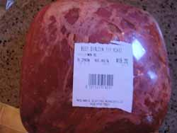
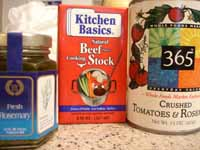
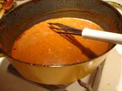
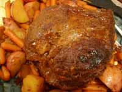

Cooking 101, Mom's Pot Roast
Cooking 101, Mom's Pot Roast
The ability to make a good pot roast, and a basic beef stew, without a recipe, is a skill that every good cook and homemaker should acquire. I say pot roast and stew because the way I made them is virtually identical except that for stew the meat is in pieces instead of one big chunk, and the vegetables may vary slightly. Once you have the technique down you can customize the recipe to your taste or what you have on hand, using different seasonings, braising liquids, and vegetables. The aroma of a pot roast cooking is something that really can’t be equalled; outside of a fire in the fireplace I don’t think there’s anything that makes your house seem more welcoming, except to a vegetarian, of course. Every man I have ever known has loved pot roast, and most children like it, too, although for the more fussy among them (children, that is) you may have to make sure not to include the vegetables or gravy or let anything touch anything else on the plate.

Today I’m making my pot roast with a sirloin tip, not the ideal cut of meat for the purpose, but it’s what McGinnis Sisters had on special and I wasn’t about to pay over $5 a pound for a chuck roast! Chuck is really the best cut for pot roast; it has good flavor and enough fat in it to stay juicy through the long cooking time. This sirloin tip is too lean and may be dry so I’m going to make extra gravy to go with it. It will probably make pretty good leftovers for sandwiches, though, and be easy to slice cold. Leftover pot roast makes wonderful sandwiches, either with mustard and horseradish, or even just with butter.
Mom’s Pot Roast (and Beef Stew)
- 1/2 cup flour, seasoned with salt, pepper, and paprika
- 1 boneless chuck roast, or ask your butcher for a good roast for a pot roast, 3-5 pounds
- oil for browning meat and onions
- 2-3 sliced yellow onions
- 2-3 cloves garlic, minced, sliced, or crushed
- 1 tablespoon worcestershire sauce
- 2-3 tablespoons soy sauce
- 1/4 cup tomato paste, or 1 can tomatoes, or some chopped fresh tomatoes
- 1/2 cup red wine
- 1 cup beef stock or broth
- rosemary, thyme, bay leaf
- assorted vegetables, carrots, turnips, potatoes, peas if making stew
1. Place the seasoned flour on a large plate and dredge the roast in it, coating all sides well. If making stew, put the seasoned flour in a plastic bag and shake the beef cubes in the bag until they are well coated on all sides.
2. Heat oil in dutch oven or deep skillet with lid. Brown meat well on all sides. Or brown stew meat well, without crowding; may have to do in batches. Remove meat and brown onions in same pan until onions are a deep color. The key to a good pot roast or stew is browning the meat and onions until they are really well caramelized. This gives the gravy a nice color and flavor.

3. Add wine, worcestershire sauce, and soy sauce to pan with onions, turning heat down, and cook, stirring to deglaze and scrape up any brown bits. Add tomato paste or tomatoes. I like to use Whole Foods canned tomatoes with rosemary. Add about 1/2 cup of stock, about 1 teaspoon each of rosemary and thyme and 1-2 bay leaves. Put the roast or stew meat back in the pot and cover. At this point you could bung the whole thing in a crock pot if you wanted to – what you would do in that case is use half the amount of wine and stock since crock pots manufacture their own liquid in some mysterious fashion. First put the carrots, potatoes, etc. that you’re planning to serve with the roast in the bottom of the crock pot, then put the browned meat on top of them, then pour the braising liquid with its seasonings over the top of everything and cook on low for 10-12 hours. When you’re ready to eat, remove all the food to a platter and turn crock pot on high to thicken the way I describe in #5, below.
4. Cook on top of stove at a very low simmer, or in oven at 325º for about 3 hours, until meat is fork tender (you may need a bit more time if the roast is closer to 5 pounds). For the last hour of cooking add the assorted vegetables that you are going to serve with the meat; make sure you cut them in small enough pieces that they will get soft in an hour. For stew you would cut vegetables into smaller, bite-sized pieces and if using peas you wouldn’t put them in until the very end. Every so often check the liquid in the pot and add more if it has cooked away. This will depend on how tightly the lid fits and also how much fat is in the meat and how juicy it is. If making stew, stir occasionally and add more stock or water if necessary.

5. At the end of cooking time, remove meat and vegetables to a platter and keep warm. For stew you wouldn’t do this. See how much juice/sauce is in the pan and how thick it is. If it needs thickening, whisk a couple tablespoons of flour into the reserved stock until well blended, then mix and stir into the juices in the pan over low heat on top of the stove. Let it simmer for a couple of minutes until it thickens and the raw flour taste cooks out of it. Taste and see if it needs any salt but it shouldn’t, pour into sauceboat and serve with the platter.
6. When serving, try to cut the roast against the grain, but it may fall apart in chunks when it’s hot. It will be easier to slice when it’s cold, for sandwiches. I don’t usually cook too many potatoes with our pot roast because Calvin likes noodles with it; I just put a few in.

Note: Some people say you shouldn’t cook with wine you wouldn’t drink. Since I don’t drink at all, that would put me in a quandary, but even when I did drink, my palate was never sensitive enough to detect whether a stew or sauce had been made with a decent vintage or some old rotgut. Now I just go to the condiment section of the supermarket and buy a bottle of “cooking wine”, but if you are one of those to whom it matters, by all means spend your money on a barolo or a merlot or something for your pot roast; you can measure out the little bit you need for the cooking and drink the rest with the meal.
Comments
One way to interpret the adage of “Don’t cook with a wine you wouldn’t drink” is don’t cook with a wine you CANNOT drink. Most cooking wine has so much added salt that is is indeed truly undrinkable. Most people will end up vomiting and sick before they will end up drunk on it.
I know what you’re saying, Martha, but you should have tasted the gravy tonight; it was so good!
Pot roast really does fill a house with a wonderful smell. I love the feeling of coming into the house on a cold, dark night and being greeted by good cooking smells from something like a pot roast or a stew.
And I’m with Calvin, I like pot roast over noodles better than pot roast over potatoes.
I really agree about the basic stew/potroast technique, and its fundamental nature. I bet we could make a list of the basic techniques that make a home cook competent to tackle anything…and then do a series on them- with variations from different cooks. do you think that would be fun?
Other ones which come to mind are the related chicken fricasee type things, gravies and deglazing, white sauces and gratinees.everyone has their own favorites, and original ideas which use these methods. It might be neat to see them sort of grouped together, with people contributing their ideas.
Does this make any sense? You’ve got me craving some potroast smells.
Great ideas, Lindy! I know Julia Child, in her book, From Julia Child’s Kitchen, says Coq au Vin and Chicken Fricasee are basically the same recipe but with red vs. white wine and she puts them on the same page and just shows the subtle variations.
It could be kind of like junior high school home economics class, the cooking section.
Just in case you wondering if these cooking 101 sessions were reaching their intended audience, I made sure to pass this one along to a student who works in my office, who announced that he attempted to make pot roast last week. ON THE GRILL. And he managed to explode a pyrex dish. I sent him the link IMMEDIATELY.
Great, great post. Pot roast seems easy to make, but I always look for guidance when cooking large chunks of meat. This is coming to my kitchen sometimes soon…
That’s hilarious, Carly! One of my earlier cooking embarrassments that I had forgotten until this moment was cracking a pyrex dish at a boyfriend’s house by putting it over an open flame. His mother wasn’t too pleased. We didn’t have pyrex at our house so I wasn’t familiar with its limitations, but open flames (like grills and gas burners) are probably the only things they really can’t handle.
Yulinka, at least your boyfriend won’t say this one is girly! But you’re right, when you put out a large chunk of cash for a big piece of meat you want a few guidelines; even on special this roast cost me $18 or so.
I like the new banner! Very nice.
I am making the best pot roast ever. BUT I got a call to ask how my beef stew was coming along. How do I turn a pot roast into a beef stew overnight. I have to serve it tomorrow. HELP
I wouldn’t worry, Karly. A pot roast is a beef stew, except with one big piece of meat instead of a lot of small ones. Don’t you agree, Mom? I suppose you could remove the meat from the liquid, cool it, shred it with a fork, and then return it to the liquid.
Hi, Karly! I agree with Leland; I would just remove the meat, cool it, cube it, then return to the simmering liquid, along with whatever cut-up vegetables you want to have in your stew. I’m sure it will be delicious. Maybe some of our other readers have some ideas. Readers?
Add a comment